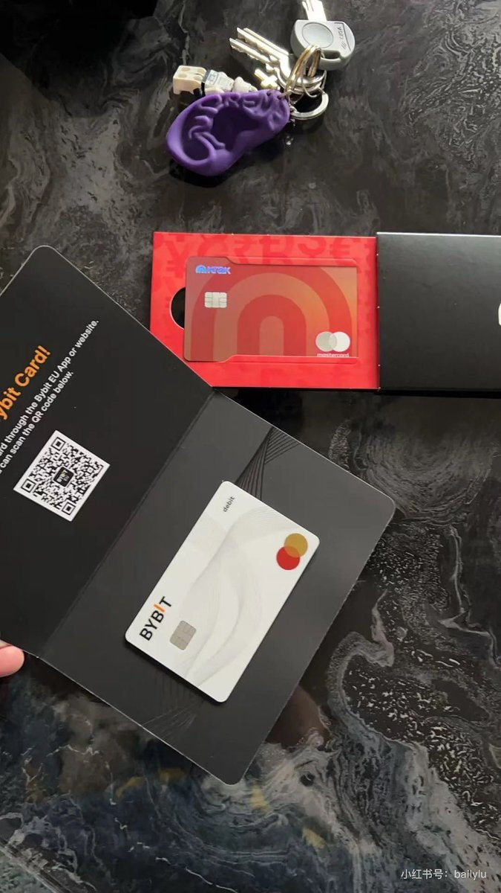
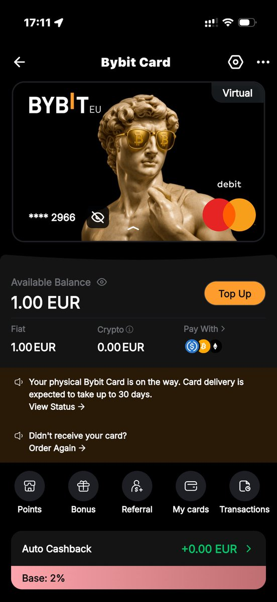
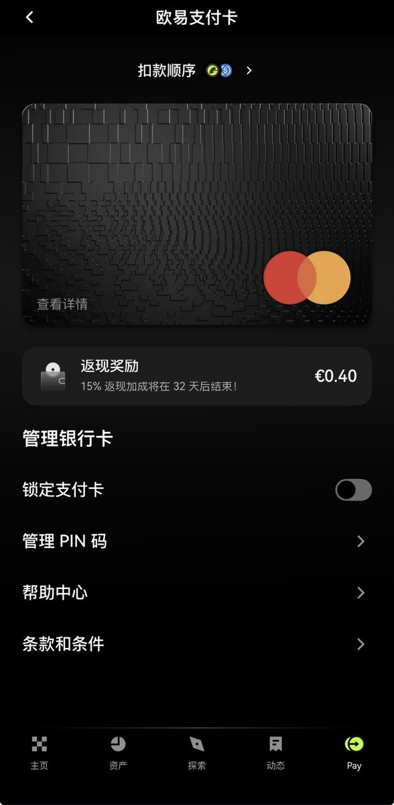

@bailyLU 第一张那个彩色的卡我也有转发过啊，但Revolut需要欧洲的居留才能开户





刷xhs看到博主“天空中的小精灵”开的这张Revolut Chrome卡，尤其是放在水下冲的效果真的相当哇塞！
非塑料卡的缺点还是蛮多的，沾指纹、留划痕。虽说Mastercard Worldelite Debit的权益不算多，但放在卡包里挺炫酷的。
想问下万能的推友，现在Revolut哪个区好开些，看评论区有人说美区没有这个卡面。 https://t.co/joTS8nA5Bt
非塑料卡的缺点还是蛮多的，沾指纹、留划痕。虽说Mastercard Worldelite Debit的权益不算多，但放在卡包里挺炫酷的。
想问下万能的推友，现在Revolut哪个区好开些，看评论区有人说美区没有这个卡面。 https://t.co/joTS8nA5Bt
众所周知欧洲的U卡一直是最多的，选择也是最多的，颜值功能也是最好的。
比如：
Revolut欧区、Kraken欧区、Bybit欧区
还有最近很火的okx的新卡。
实话实说欧盟还是颜值都不错😌 https://t.co/etqLJJVaKG
比如：
Revolut欧区、Kraken欧区、Bybit欧区
还有最近很火的okx的新卡。
实话实说欧盟还是颜值都不错😌 https://t.co/etqLJJVaKG